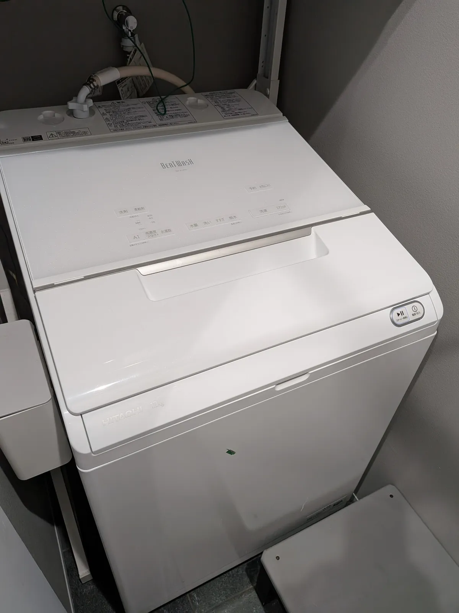
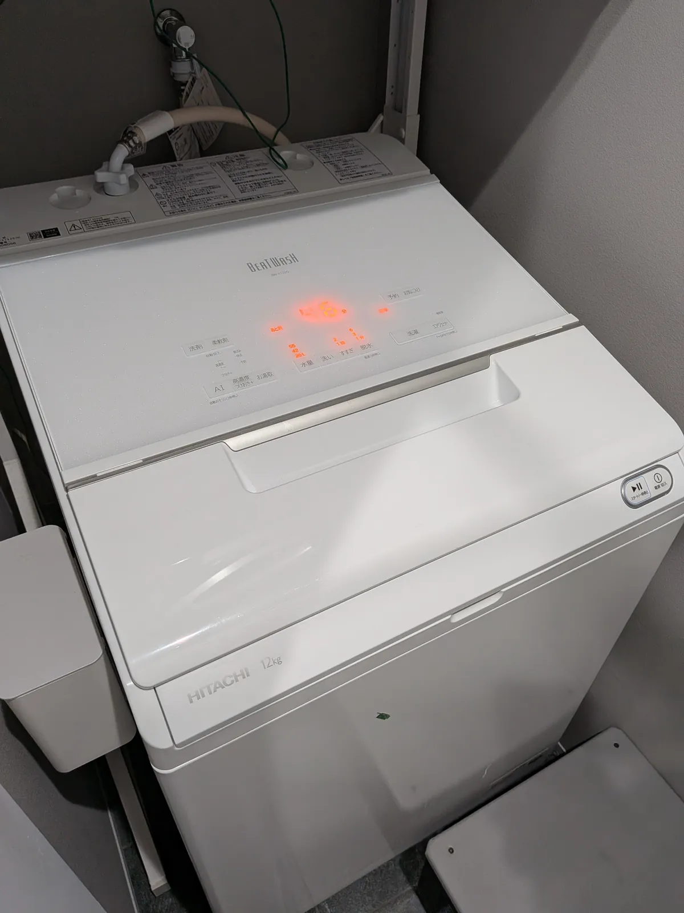
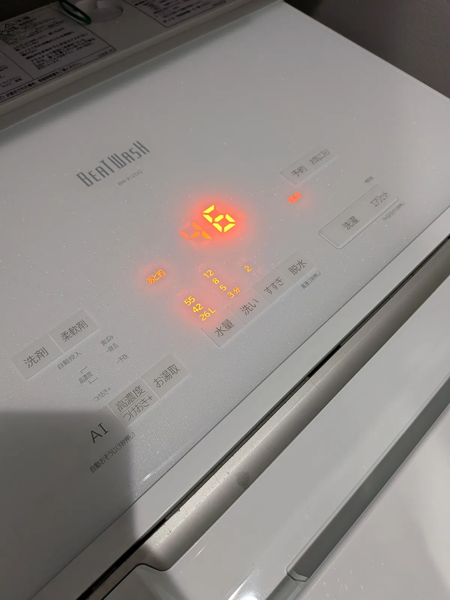
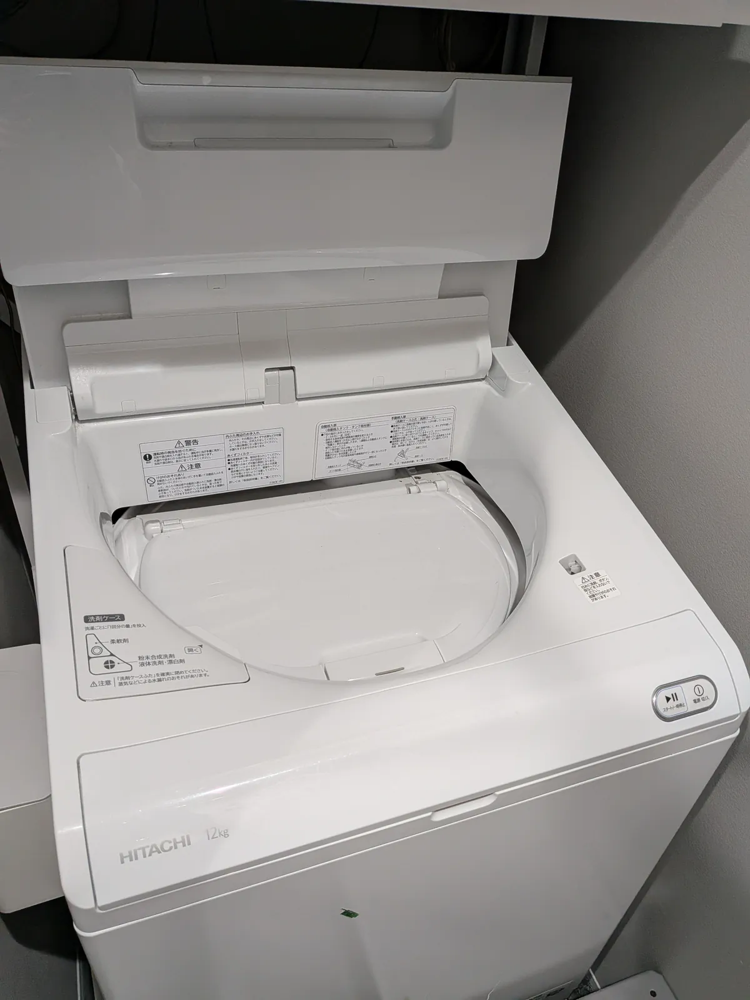
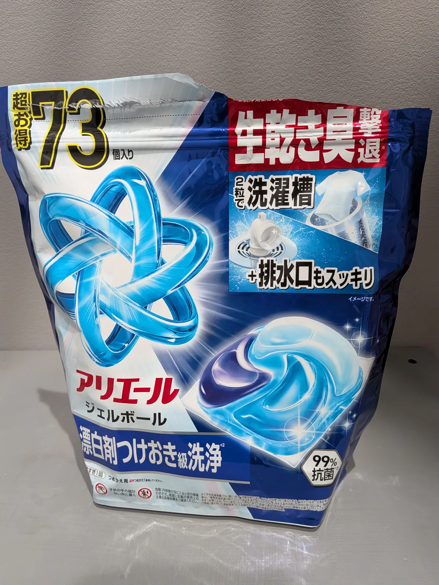
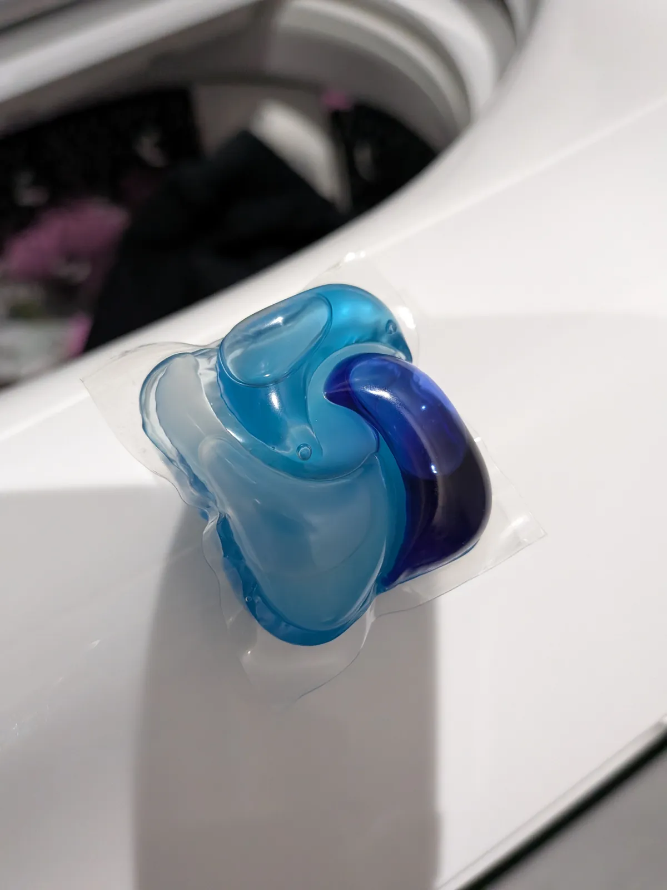
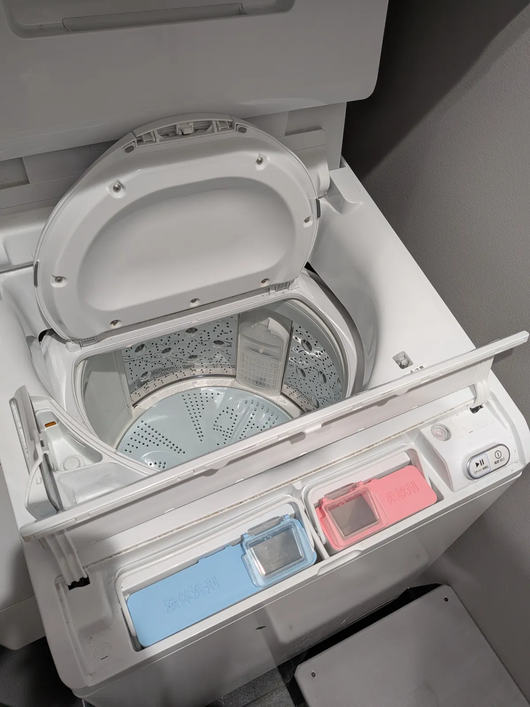

※本記事にはプロモーション（PR）が含まれています。
ビートウォッシュと乾太くんを4年使ったリアルなレビュー｜洗濯から乾燥まで約2時間の組み合わせ
40代夫婦と6歳・2歳の子どもの4人家族で、日立の洗濯機「ビートウォッシュ BW-X120G」（12kg）と、リンナイのガス衣類乾燥機「乾太くん RDT-80」を4年使っています。家を建てるときに一緒に買って、そのとき設置しました。洗濯から乾燥までの流れと、よかったところ・気になるところを正直に書きます。

買うきっかけ
それまでは、一人暮らしのころから使っていた約5kgクラスの洗濯機でした。だいたい2万円くらいのものだったと思います。家を建てるタイミングで、ビートウォッシュと乾太くんを一緒に入れて設置しました。

わが家の回し方
普段は洗濯物を入れてスタートを押すだけです。おしゃれ着など、特別なコースが必要なときだけコースを選びます。
洗ったあとは、すぐ上の乾太くんに入れて乾かしています。洗濯と乾燥をあわせて、だいたい2時間くらいです。


よかったところ
洗濯機と乾太くんがすぐそばにあるので、洗ったものをそのまま乾太くんへ移せます。その流れが便利です。

※価格はリンク作成時点のものです。最新の価格はリンク先でご確認ください。
※わが家で使っているのはBW-X120Gです。リンク先は同じビートウォッシュ12kgの別モデルです。

※価格はリンク作成時点のものです。最新の価格はリンク先でご確認ください。
※この商品は配送のみで、取り付け工事は含まれていません。
気になるところ
洗濯機の蓋は折りたたみ式なので、開けても高さがほとんど出ません。そのおかげで上に乾太くんを置けています。それでも乾太くんは少し高いので、わが家では踏み台を使っています。

使っている洗剤
洗剤は、アリエールのジェルボールを使っています。73個入りのつめかえ用パウチです。ジェルボールを手で1個入れて洗っています。




※価格はリンク作成時点のものです。最新の価格はリンク先でご確認ください。
※リンク先は「ジェルボール プロ」の2袋セットで、写真の商品とは種類や内容量が異なる場合があります。
こんな家族におすすめ
子どもがいて、洗濯物がすぐたまる家族におすすめです。洗ってすぐ乾かせる組み合わせだと、次の日にまた使う服にも間に合いやすいです。
※価格はリンク作成時点のものです。最新の価格はリンク先でご確認ください。
※わが家で使っているのはBW-X120Gです。リンク先は同じビートウォッシュ12kgの別モデルです。
※価格はリンク作成時点のものです。最新の価格はリンク先でご確認ください。
※この商品は配送のみで、取り付け工事は含まれていません。
※価格はリンク作成時点のものです。最新の価格はリンク先でご確認ください。
※リンク先は「ジェルボール プロ」の2袋セットで、写真の商品とは種類や内容量が異なる場合があります。
よくある質問
洗濯から乾燥までどれくらいかかりますか？
洗ったあとすぐ上の乾太くんに入れて、洗濯と乾燥をあわせてだいたい2時間くらいです。
普段はどのコースを使っていますか？
普段は洗濯物を入れてスタートを押すだけです。おしゃれ着など、特別なコースが必要なときだけコースを選びます。
洗濯機の上に乾太くんを置いて、蓋は開けられますか？
洗濯機の蓋は折りたたみ式なので、開けても高さがほとんど出ず、上に乾太くんを置けています。それでも乾太くんは少し高いので、踏み台を使っています。
洗剤は何を使っていますか？
アリエールのジェルボール（73個入りのつめかえ用パウチ）を、手で1個入れて使っています。